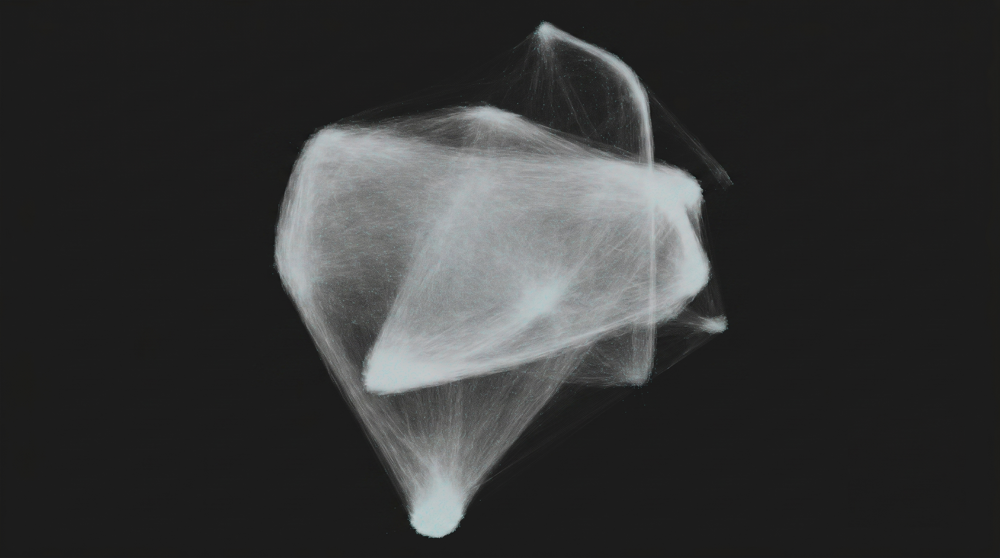
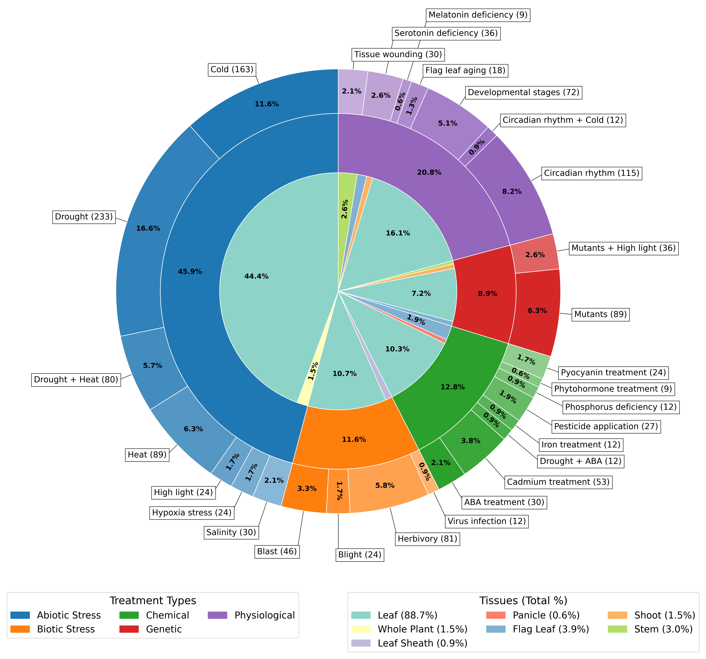
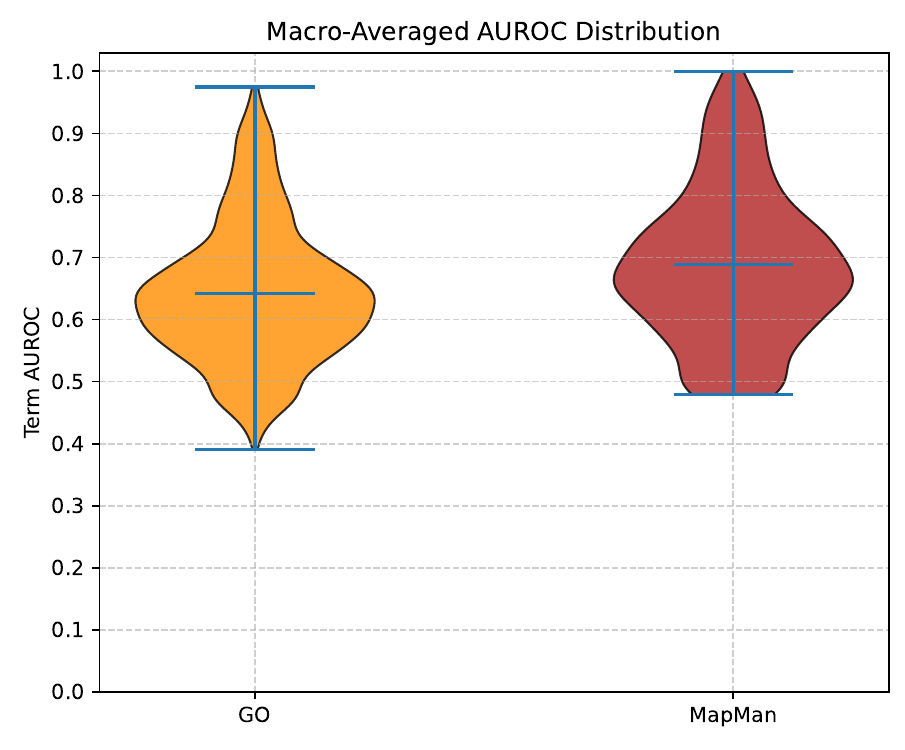
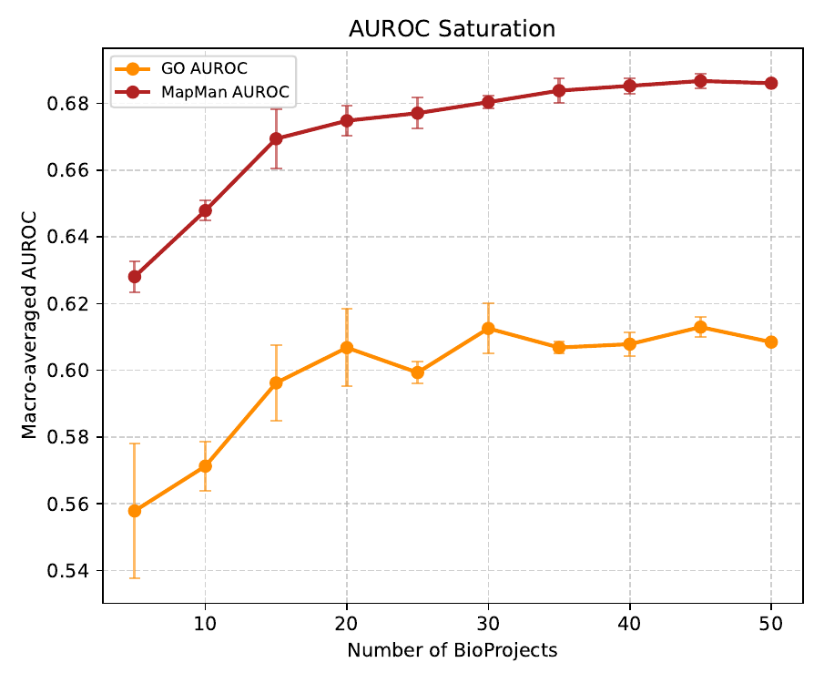

Rice2Net is a webtool for the visualization, exploration, and analysis of the rice (Oryza sativa) gene regulatory network (GRN) and coexpression data. The tool interfaces with a Neo4j graph database to render topological data into a force-directed graph. Users filter subnetworks, manipulate node visibility, adjust layout parameters, and cross-reference genes with functional annotations.
Rice2Net provides a canvas paired with a control panel. By default, the application loads a topological overview of the database. Users navigate the canvas using Pan and Select modes located in the toolbar, and interact with nodes to view metadata. The functionalities are divided into the following sections:
The Target Explorer allows users to isolate subnetworks based on a list of genes.
.txt file upload.The Layout panel provides control over the rendering and the D3.js force simulation engine.
The Export suite allows users to extract visualizations and tabular data.
x, y), visibility states, and metadata of the canvas, allowing the user to import and restore the visualization.The Import section allows users to load networks or restore saved application states, overriding the Neo4j database connection.
.tsv, .csv, or .txt file containing Source and Target columns (with Weights). The application builds the topology, queries the database for metadata, and calculates a physics layout.Rice2Net aggregates annotations and sequence identifiers from databases to provide context for each node. The following annotation sources are integrated into the database:
The dataset comprises 1402 samples from photosynthetic tissues. Treatments include abiotic stress, physiological conditions, chemical applications, biotic stress, and genetic modifications. Genetic modifications involve mutations influencing chloroplast development.

The reference transcriptome and proteome for Oryza sativa subsp. japonica (genome assembly IRGSP-1.0) were used. Data was sourced from the following NCBI SRA BioProjects: PRJNA1219119, PRJNA609211, PRJNA1255502, PRJNA575016, PRJNA1073311, PRJNA753062, PRJNA890021, PRJNA917024, PRJNA1020267, PRJNA1293730, PRJNA933387, PRJNA350792, PRJNA1174730, PRJNA1198503, PRJNA1068025, PRJNA358135, PRJNA716196, PRJNA532802, PRJNA603205, PRJNA1120955, PRJNA1229755, PRJNA1148223, PRJNA1067293, PRJNA1234113, PRJNA1234517, PRJNA730675, PRJEB64872, PRJNA1036792, PRJNA1121593, PRJNA751936, PRJNA1011474, PRJNA802358, PRJNA894465, PRJNA1019094, PRJNA741871, PRJNA430015, PRJNA601442, PRJNA450806, PRJNA811347, PRJNA1141930, PRJNA1260801, PRJNA1067651, PRJNA790476, PRJNA767196, PRJNA386172, PRJNA609653, PRJNA631179, PRJNA1010774, PRJNA408068, and PRJNA560146.
RNA-seq data processing was executed using a standard pipeline. Read trimming and quality filtering were performed applying a sliding window size of 4 and a mean quality threshold of 20. Transcript quantification was carried out with 100 bootstrap samples, and quality control metrics were aggregated. BioProjects exhibiting a mean sample alignment rate below 60% were excluded. Transcript abundances were aggregated into gene counts, and data was normalized to generate Variance Stabilizing Transformation (VST) matrices. Prior to network inference, genes were filtered to retain those maintaining a minimum count of 10 in at least 10% of the dataset, with a cross-dataset variance of ≥ 0.5.
The expression matrix was subjected to GRN reconstruction using the Seidr toolkit. An ensemble of six inference algorithms was applied: Pearson correlation, Spearman rank correlation, Partial correlation (PCOR), Random Forests (GENIE3), Context Likelihood of Relatedness (CLR), and Algorithm for the Reconstruction of Accurate Cellular Networks (ARACNE). Seidr's Inverse Rank Product (IRP) method was used to aggregate the networks generated by each algorithm into a consensus network. This consensus network was pruned using Seidr's backbone function with a Z-score threshold of 1.28 to extract the network topology.
The global network was evaluated against functional annotations. The distribution of macro-averaged AUROC metrics yielded a mean of 0.6429 across 1,786 Gene Ontology (GO) terms and a mean of 0.6866 across 780 MapMan bins. Network saturation analysis evaluated the macro-averaged AUROC across dataset subsets of varying BioProject counts. The macro-averaged AUROC reached a performance plateau at 20 BioProjects for GO and MapMan annotations.


Motif references used in TF-Promoter Binding are sourced from PlantTFDB, JASPAR Core, JASPAR Unvalidated, and CIS-BP. Rice and homologous TF binding motifs from PlantTFDB, JASPAR, and CIS-BP were obtained. Motifs were associated with loci non-exclusively. Gene promoters (2000 bp upstream of start codon) were extracted using bedtools. Promoters were scanned for cis-binding sites using FIMO (MEME Suite). This identified regulator-regulated gene pairs within GRNs.
Community detection within networks was performed using Python Infomap. Modules were functionally annotated using g:GOSt (g:Profiler).
Source code available at: https://github.com/m13paiva/Rice2Net
We acknowledge the GPlantS lab at ITQB for their support throughout this project, and the Master in Computational Biology and Bioinformatics program from NOVA FCT.
This work was supported by FCT - Fundação para a Ciência e a Tecnologia, I.P., through: